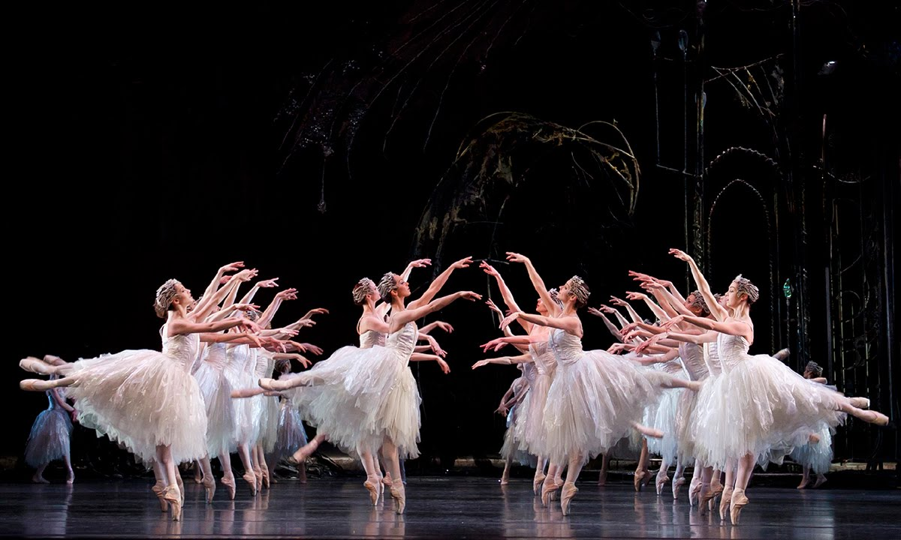
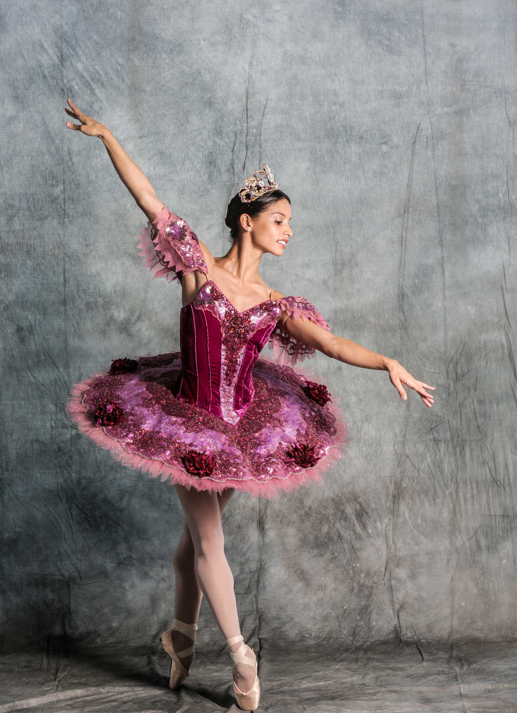
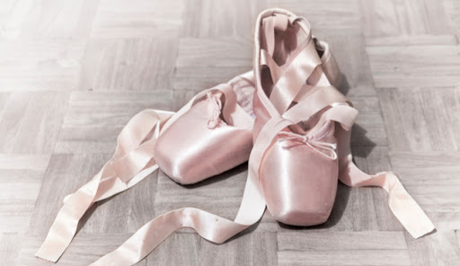

Ballerinas, or ballet dancers, use their bodies to tell a story through dance. Accompanied by an orchestra, they use the music to help them connect with their audience.
A tutu is a piece of clothing worn by female ballet dancers. The Classic tutu is short and stiff and protrudes out from the hip, and the Romantic tutu is longer, softer and fall in a bell-like fashion. Tutus are usually attached to the bodice of the dress. They can be made from a number of different materials such as tulle, muslin or silk. The tutu evolved along with clothing trends and styles of the years. The modern tutu comes in several different styles such as the Pancake tutu, the Platter tutu and the American tutu.
Professional dancers train fom as early an age as 5 to become ballerinas. There are many dance companies around the world. The most prestigious among them are the Bolshoi Ballet from Russia, The American Ballet Theatre from the United States and the Paris Opera Ballet from France. There are three kinds of ballet: Classical, Romantic and Neoclassical.
Ballet slippers are also known as pointe shoes. They are covered in satin and come mainly in different shades of pink. The toe is traditionally made from layers of cardboard and glue that are shaped into a "box" which is how the dancer is able to balance ontheir toes. The sole is made from leather and gives the dancer traction on smooth sufaces, such as stages, but also acts as a support for the arch of the foot.
Fun Fact: The New York City Ballet Comapny goes through over 8500 pointe shoes each year for only 100 dancers. That's 85 pairs of shoes per dancer per year and almost 8 pairs per month!
Link to Home Link to Ballerina-Land